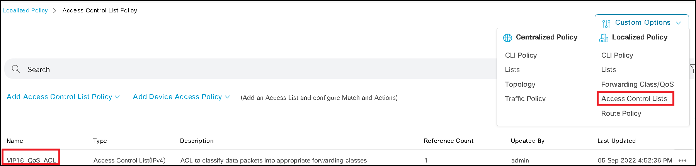
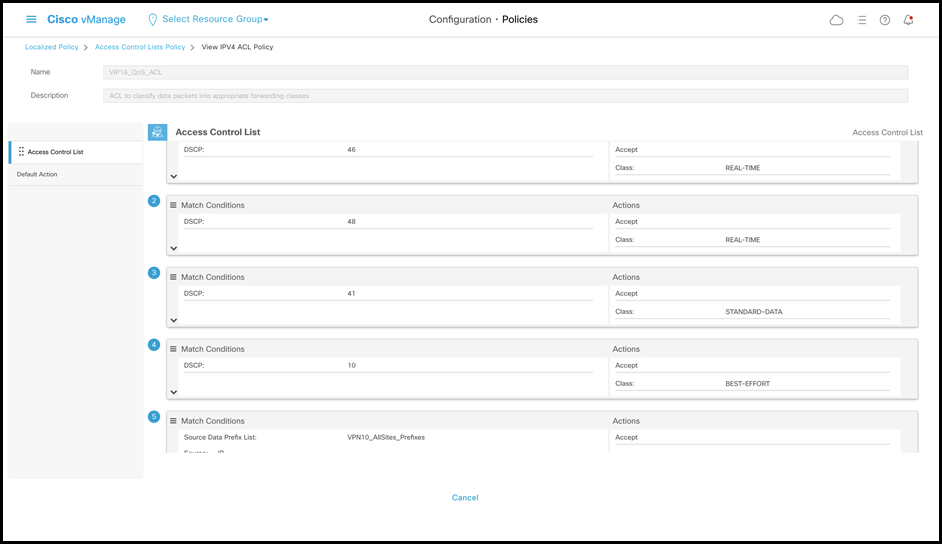
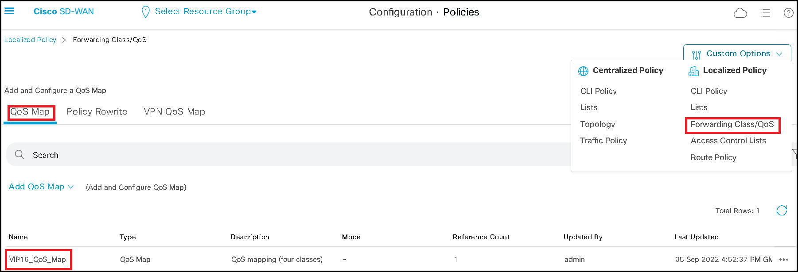
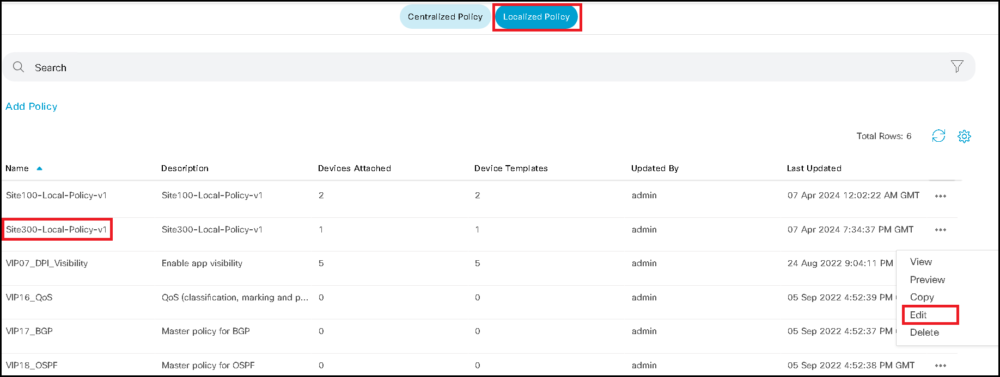
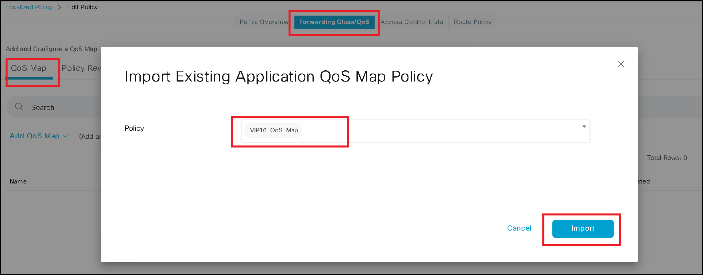
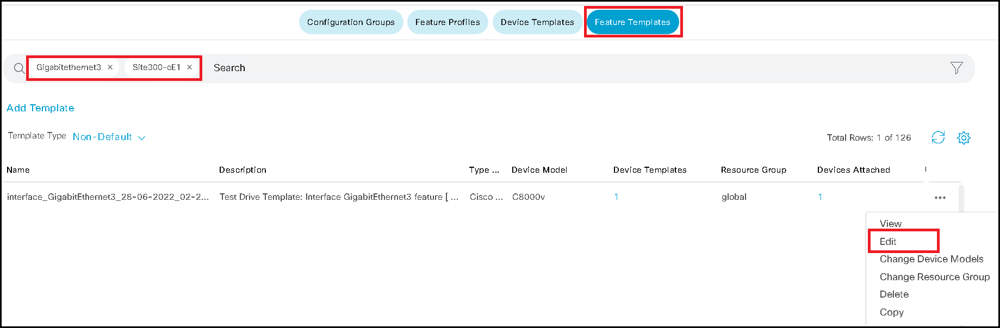
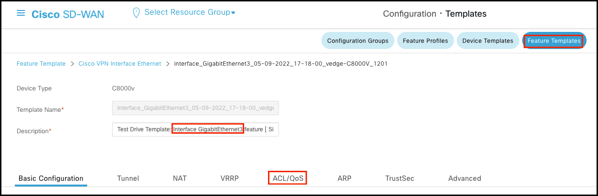
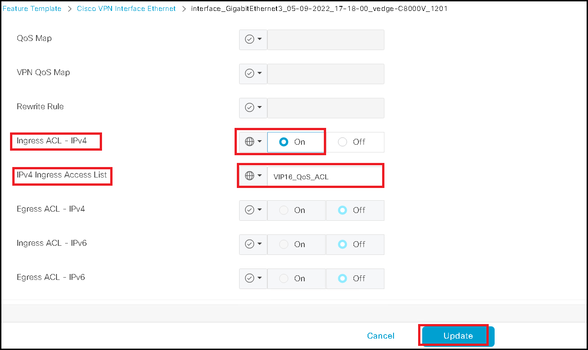
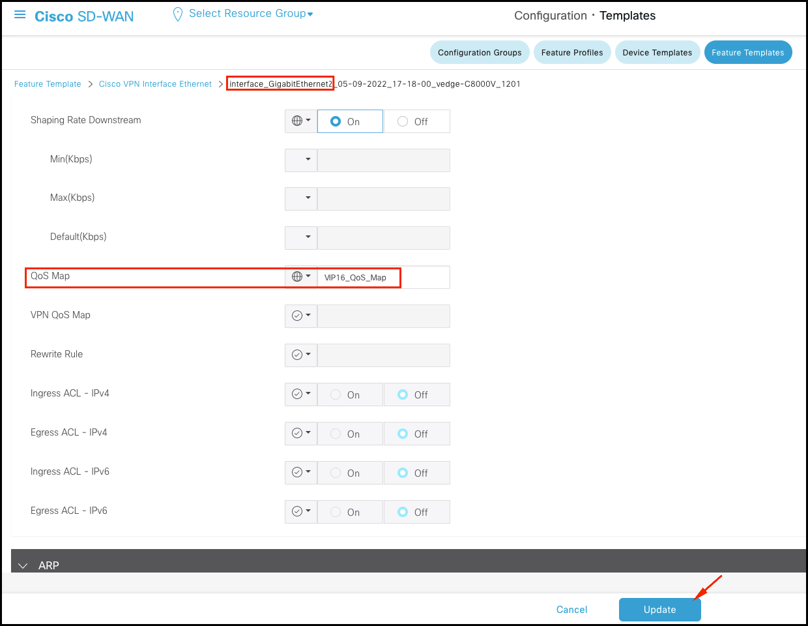

Localized Policy - QoS
Task 2 QoS Policy
In this task, you are going use localized policy to configure QoS classification, makring on sevice side and QoS Map policy on WAN interface.
QoS ACL
- Reivew the pre-configured QoS ACL for traffic classiciation. The ACL is configured to classify traffic based on DSCP values 46, 48, 41, 10 (and 0, or NO DSCP) and distribute it into four classes.
a. On vManage, navigate to Configuration > Policies > Custom Options > Localized Policy > Access Control Lists

b. Open VIP16_QoS_ACL in view mode.

QoS Map
-
Review the QoS Map to be used for queue definition. Notice that it’s configured with four QoS queues (one LLQ and three WRR queue).
a. On vManage, navigate to Configuration > Policies > Custom Options > Localized Policy > Forwarding Class/QoS 
b. Open VIP16_QoS_Map in view mode.
-
Attach QoS ACL and QoS Map to Localized Policy
a. Navigate to Configuration > Policies > Localized Policy, add open Site300-Local-Policy-v1 in Edit mode

b. Import VIP16_QoS_Map QoS Map

c. Import VIP16_QoS_ACL Access Control List Policy
d. Save policy change to push configuration to SIte300-cE1 -
Apply QoS ACL to LAN-facing interfaces of Site300-cE1.
a. Navigate to Configuration > Templates > Feature Templates. Type in Site300-cE1 and Gigabitethernet3 in the search bar.
b. Open the interface feature template in Edit mode

c. Scroll to the ACL/QoS section and configure VIP16_QoS_ACL as an ingress IPv4 ACL
Note make sure to enter the name correctly

 -
Apply QoS Map to WAN interfaces of Site300-cE1
a. Navigate to Configuration > Templates > Feature Templates. Type in Site300-cE1 and Gigabitethernet2 in the search bar. Open it in edit mode.
b. Scroll to the ACL/QoS section and configure VIP16_QoS_Map as QoS Map.
Note: make sure to enter the name correctly

c. Repeat the steps for Gigabitethernet1 -
Generate some traffic by initiating ping test from router Site300-Core-VPN10.
- Monitor the traffic assignment to each class in vManage. Monitor > Devices > Site300-cE1> QoS. Select the WAN interface GigabitEthernet1 or GigabitEthernet2 and to set the graph to Real Time. You might want to change policy rate to pps for better flow identification.
Note: Depends on the destination IP you use for testing, Site300-cE1 might use GigabitEthernet1 or GigabitEthernet2 - Send 1000 packets to 10.10.1.100 (Site100 LAN side router) with
- DSCP 48
- DSCP 41
- DSCP 10
- DSCP 0
Recall the mapping between classes and queues.
Queue 0 = LLQ = FC Control (REAL-TIME) = DSCP 46, 48
Queue 1 = WRR = FC STANDARD-DATA = DSCP 41
Queue 2 = WRR = FC BEST-EFFORT = DSCP 10
Queue 3 = WRR = FC DEFAULT-NO-DSCP = DSCP 0